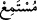
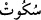

etmek ve gereğince amel etmek maksadıyla “dinleyin” Çünkü, onun sahip olduğu şerefli
makam bunu zarûrî kılar.
“
(dinleyen)” ile “
(işiten)” kelimeleri arasında fark vardır. Müstemi‘ (kulak
veren), kendini vererek duymak maksadıyla dinleyen kimsedir. Sâmi‘ (işiten) ise
duymak maksadıyla değil tesadüfen işiten kimsedir. Buna göre her müstemi‘, sâmi‘dir
ama her sâmi‘ müstemi‘ değildir.
“ve susun” Kur’an-ı Kerim tilaveti sırasında, ona gereken tazimi göstermek ve tam
olarak dinlemek için susun ve bitinceye kadar gereken adabı yerine getirin.
Her ikisi de “susmak” anlamına gelen “
” ile “
” kelimeleri arasında da
fark vardır. “İnsât” kelimesinde kulak kesilerek dinlemek mânâsı vardır. “Sükûtta” ise
bu mânâ yoktur.
“ki size merhamet edilsin.” yani, Kur’an’ın en yüksek semerelerinden olan rahmeti
elde edesiniz.
İbn Abbas (r.a.) demiştir ki: Bu ayet inmeden önce müslümanlar namazda
konuşuyorlar ve ihtiyaçlarını istiyorlardı. Meselâ bir adam namaz kılan bir cemaatin
yanına gelir ve onlara kaç rekat kıldıklarını ve geriye ne kadar kaldığını sorar, onlar da
cevap verirlerdi. Allah Teâlâ bu ayeti indirerek namaz kılarken susup okunan Kur’an’ı
dinlemelerini emretmiştir. Çünkü Kur’an kırâatı, namazın en büyük rükûnlarındandır.
İmam Ebû Hanîfe (r.h.) bu ayeti, imama uyan kimsenin susması gerektiği ve imamın
kırâatının aynı zamanda imama uyanın da kırâatı olduğu hükmünü çıkarmıştır. Buna göre
imam ister gizli okusun ister açıktan okusun ona uyan bir şey okumaz. Çünkü bu ayetle
Allah ona iki şeyi emretmiştir: Susmak ve can kulağıyla dinlemek. İmamın gizli okuması
sebebiyle dinlemek mümkün değilse bile susmak, vacip olarak kalır.
Ayetten bu hükmün çıkarılmasının izahı şudur: Ayette emredilen susmaktan maksad,
namaz esnasında okumaktan nehiy olmayıp konuşmaktan nehiy ise de burada sebebin
husûsîliğine değil lafzın umûmîliğine itibar olunur. Çünkü bir kısım müfessirler, ashâb-ı
kirâmın namazda iken Hz. Peygamber (a.s.)’ın arkasında Kur’an okumaları sebebiyle bu
ayetin özellikle namazdaki kıraat hakkında indiğini söylemişlerdir. Haddâdî de
tefsirinde bu görüşün en doğru görüş olduğunu belirtmiştir.
el-Eşbâh’da şöyle denilmiştir: “Ebû Hanife (r.h.), imamın Kur’an okurken
karıştırmaması için ona şefkaten muktedîlerden kırâatı kaldırmış, hatta yasaklamıştır.”
İbn Melek’in Şerhu’l-Mecma‘ adlı eserinde belirtildiğine göre imama uyanın kırâatı
tahrîmen mekruhtur ve doğru olan görüş de budur.
Hz. Ali (r.a.): “İmamın arkasında okuyan kimse sünnete aykırı davranmıştır.” demiştir.
Anlatıldığına göre Ehl-i sünnet’ten bir grup Ebû Hanife’ye gelerek onunla, imamın
arkasında kırâat konusunda münazara edip onu susturmak ve fikrinden vazgeçirmek
istediler. Ebû Hanife onlara:
“Hepinizle birlikte münazara etmem mümkün değil. Bunun için siz münazara işini